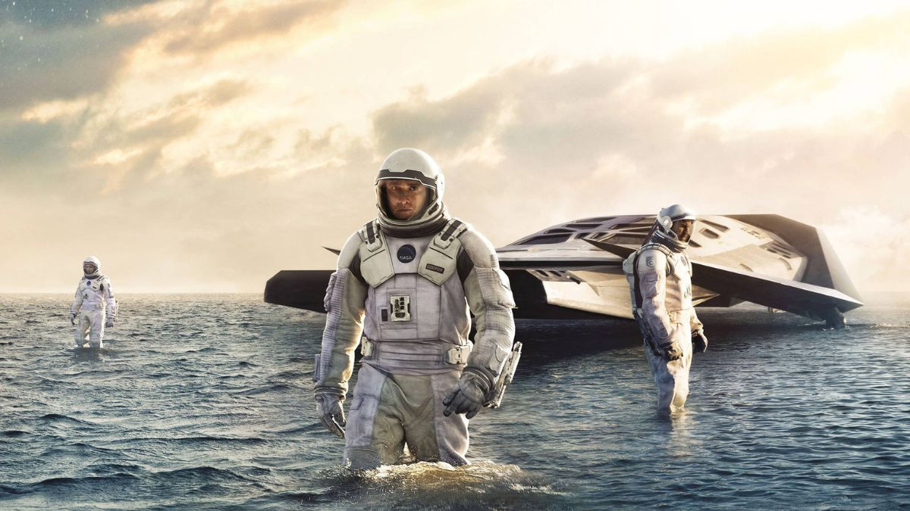
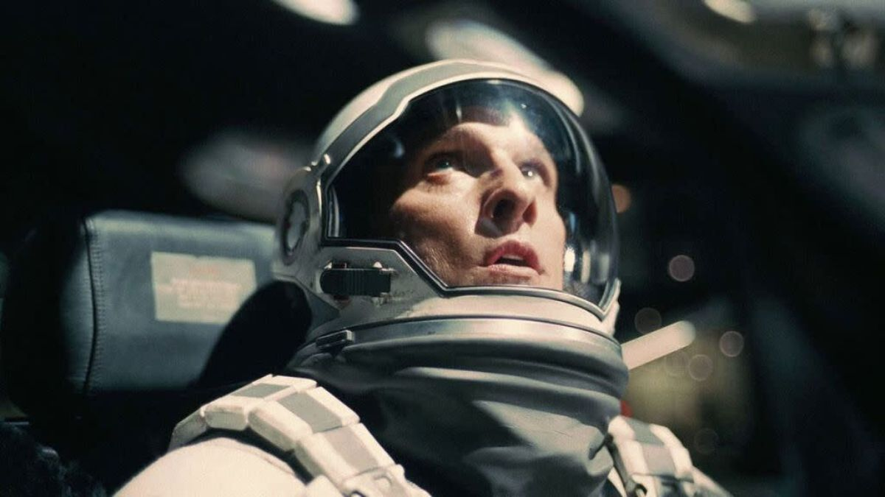

Publicado el 27 de mayo de 2025
Con la Tierra al borde del colapso, un grupo de astronautas emprende una misión a través de un agujero de gusano en busca de un nuevo hogar. La película de Christopher Nolan mezcla ciencia dura con un relato profundamente humano sobre el amor, el tiempo y la supervivencia.
El vínculo entre Cooper y su hija Murph es el motor emocional de la historia. A través de conceptos como la relatividad del tiempo y la paradoja gravitacional, el film invita a reflexionar sobre la responsabilidad intergeneracional y el futuro del planeta.
Las escenas en mundos alienígenas, como el planeta de las olas gigantes o el congelado, reflejan la vulnerabilidad del ser humano ante lo desconocido. La dirección de Nolan, junto a la música de Hans Zimmer, genera una experiencia sensorial intensa.